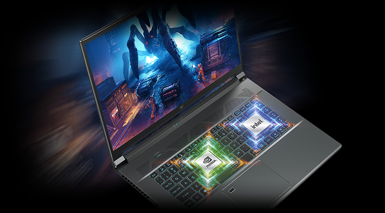
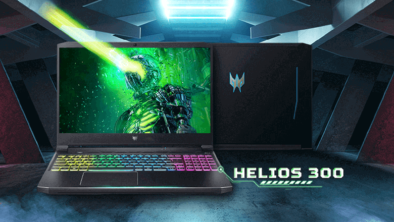
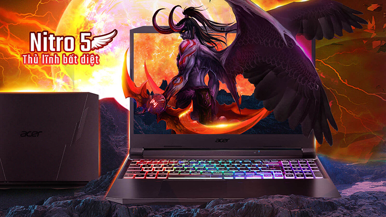

Acer ra mắt laptop gaming mới với CPU và GPU mới nhất
Mở đầu cho năm 2022, Acer công bố làm mới các dòng laptop gaming Predator và Nitro với chiếc Predator Triton 500 SE, Predator Helios 300 và Acer Nitro 5. Cả 3 sản phẩm đều trang bị bộ xử lý Intel Core thế hệ 12 và card đồ họa rời NVIDIA GeForce RTX 30 Series. Trong khi đó mẫu Nitro 5 có thêm tùy chọn chip AMD Ryzen 6000 Series.
Acer còn ưu ái tặng kèm một tháng dùng thử dịch vụ Xbox Game Pass, cho phép người dùng truy cập hàng ngày vào các tựa game phổ biến và chơi cùng bạn bè, bất kể là đang sử dụng PC hay tay cầm console.
"Các dòng laptop gaming phổ biến của chúng tôi đã được làm mới với bộ vi xử lý mới nhất tại sự kiện CES. Tần số quét cùng công nghệ làm mát hiện đại được chúng tôi trang bị trên những chiếc máy mới sẽ làm hài lòng tất cả người dùng. Thậm chí ngay cả những vị khách khó tính nhất cũng sẽ yêu thích chúng.
Với hiệu suất mạnh mẽ nhờ hỗ trợ I/O, bộ nhớ và kết nối hàng đầu trong ngành, bộ xử lý Intel Core H-series thế hệ 12 mang đến tốc độ xử lý nhanh chóng mặt và đáp ứng được cho các nền tảng mà người dùng game thủ ngày nay yêu cầu. Chắc hẳn với dòng laptop gaming của Acer trang bị chip Intel thế hệ thứ 12, game thủ mọi cấp độ sẽ có được trải nghiệm tuyệt vời khi sử dụng", James Lin, Tổng Giám đốc kinh doanh sản phẩm IT, Notebook của Acer cho biết.
Predator Triton 500 SE – Laptop gaming đa dụng
Predator Triton 500 SE (PT516-52s) là chiếc laptop đặc biệt dành cho công việc và chơi game khi được trang bị bên trong bộ xử lý Intel Core i9 thế hệ thứ 12, GPU NVIDIA GeForce RTX 3080 Ti cùng bộ nhớ RAM LPDDR5 32 GB tốc độ 5200 MHz mang lại hiệu suất cực cao có thể dễ dàng cân các tựa game mới nhất trên thị trường. Máy có thiết kế theo phong cách Spartan hoàn toàn bằng kim loại cho phép người dùng dễ dàng sử dụng ở nhiều môi trường khác nhau như nơi làm việc hay giảng đường.

Predator Triton 500 SE gây ấn tượng với độ mỏng chỉ 19,9 mm ở điểm mỏng nhất.
Nhờ thiết kế di động, mẫu laptop này có thể cùng người dùng đi đến bất cứ đâu.
Máy được trang bị bộ nhớ SSD PCle Gen4 tốc độ cao đến 2 TB mang lại nhiều không gian lưu trữ trò chơi và tệp.
Hỗ trợ phần cứng mạnh mẽ này là công nghệ làm mát hiện đại. Predator Triton 500 SE sử dụng hệ thống 3
quạt, gồm 2 quạt 3D AeroBlade thế hệ thứ 5 với 89 cánh kim loại ở mỗi chiếc quạt. Công nghệ Vortex Flow
của Acer giúp chuyển hướng luồng khí quạt tạo ra đến các linh kiện quan trọng, trong khi keo tản nhiệt
được đặt ở vị trí chủ chốt trên CPU, kết hợp cùng bốn ống dẫn nhiệt giúp tăng khả năng làm mát.
Theo Acer, Predator Triton 500 SE có thể dễ dàng mang lại thời lượng sử dụng lâu nhờ sở hữu viên pin 99,98 Wh.
Predator Helios 300 – Đánh mạnh vào hiệu năng khủng
Predator Helios 300 (PH315-55) là chiếc laptop gaming mạnh mẽ được trang bị một loạt các phần cứng hàng đầu: Bộ xử lý Intel Core i7 thế hệ thứ 12, hai tùy chọn card đồ họa rời NVIDIA GeForce RTX 3080 hoặc RTX 3070 Ti, RAM 32GB DDR5 4800 MHz và SSD PCIe Gen4 RAID0 dung lượng lên đến 2TB.
Sản phẩm có màn hình IPS 15,6 inch QHD (2560 x 1440) với tần số quét lên đến 165 Hz. Ngoài ra, khung máy được cải tiến khi gọn gàng hơn giúp tăng tính thẩm mỹ cho thiết bị.
Đi cùng với phần cứng vượt trội là hệ thống quạt kép gồm một quạt AeroBlade 3D thế hệ thứ 5 giúp giữ cho nhiệt độ máy ở mức tốt, hỗ trợ kèm theo đó là mỡ tản nhiệt kim loại lỏng và công nghệ Acer’s CoolBoost.
PredatorSense tích hợp sẵn trên máy cho phép người dùng kiểm soát tốc độ quạt thông qua bốn chế độ hoạt động, trong khi tùy chọn Turbo tích hợp có chức năng tối đa hóa tức thì các cài đặt này để cải thiện hiệu suất chơi game. Ngoài ra, nhằm nâng cao trải nghiệm người dùng, Acer còn trang bị bàn phím có đèn nền LED mini RGB cho mỗi phím trên Predator Helios 300.
Sản phẩm được cài sẵn Windwos 11, sở hữu kết nối Killer DoubleShot Pro (E2600 + 1675i) và WiFi 6E cùng đa dạng cổng kết nối, gồm HDMI 2.1 kết nối với màn hình rời, cổng Thunderbolt Type-C và 2 cổng USB 3.2 Gen2. Bên cạnh tùy chọn 15,6 inch, Predator Helios 300 còn có thêm phiên bản cỡ lớn 17,3 inch (PH317-56) với tấm nền IPS QHD 165Hz hoặc FHD 165Hz /
144Hz tùy thuộc vào nhu cầu của người dùng.
Acer Nitro 5 – Chiếc laptop gaming phổ thông
Acer Nitro 5 là một chiếc laptop gaming cung cấp cho người chơi mọi thứ họ cần để khám phá và thưởng thức các tựa game mới nhất. Máy được trang bị Intel Core i7 thế hệ thứ 12 (AN515- 58) và GPU NVIDIA GeForce RTX 3070 Ti cho phiên bản cấu hình cao nhất.
Hai khe cắm SSD M.2 PCIe Gen 4 cung cấp dung lượng lưu trữ lớn, trong khi RAM DDR4 3200 tối đa 32 GB mang đến cho người chơi không gian để xử lý nhiều ứng dụng cùng lúc. Kết hợp với màn hình QHD 165 Hz cho tốc độ phản hồi chỉ 3 ms, Nitro 5 mang đến trải nghiệm chơi game mượt mà nhanh chóng.

Để nâng cao khả năng kết nối, bộ điều khiển Killer Ethernet E2600 và Intel Killler Wi-Fi 6 AX1650i được tích hợp cho phép người chơi đặt ưu tiên kết nối mạng lên hàng đầu khi mà trong thế giới game, mỗi một giây đều có giá trị.
Ngoài ra, Nitro 5 còn có phiên bản dùng chip xử lý Ryzen 6000 Series của AMD (AN515-46). Các thông số khác từ GPU đến bộ nhớ RAM và SSD cũng đều tương tự phiên bản dùng chip Intel. Màn hình của Nitro 5 phiên bản chip AMD có hai tùy chọn Full HD 144 Hz hoặc QHD 165 Hz. Cả hai đều tận dụng công nghệ AMD FreeSync để mang đến trải nghiệm chơi game mượt mà mà không gặp hiện tượng xé hình.
Acer Nitro 5 thế hệ mới được nâng cấp lên Windows 11 ngay từ khi bán ra. Phần khung máy được thiết kế lại để có tính năng làm mát bằng quạt kép với khe hút gió ở cả trên và dưới, cùng với đó là bốn cổng thoát khí giúp nhiệt lượng tỏa ra tốt hơn. Với ứng dụng tiện ích NitroSense, người dùng có thể thay đổi tốc độ quạt tùy vào các tác vụ đang sử dụng. Ngoài ra, giải pháp phần mềm này cũng có thể ép xung CPU/GPU và tùy chỉnh ánh sáng của bàn phím LED RGB 4 vùng.
Để tăng trải nghiệm chơi game, Acer trang bị cho Nitro 5 công nghệ âm thanh DTS: X Ultra giúp người chơi đắm chìm vào thế giới ảo nhờ hệ thống âm thanh rõ ràng, chi tiết. Công nghệ này cũng được xem như một lợi thế cạnh tranh, cho phép người chơi nghe được chính xác đối thủ đến từ đâu. Nitro 5 cũng được trang bị đầy đủ cổng kết nối với HDMI 2.1, USB 3.2 Gen 1 và Gen 2. Trên phiên bản dùng chip Intel, Nitro 5 có cổng kết nối Thunderbolt 4 Type-C, trong khi với bản AMD là USB 4.0. Ngoài ra, máy còn có thêm một tùy chọn cỡ lớn với kích thước màn hình 17,3 inch.